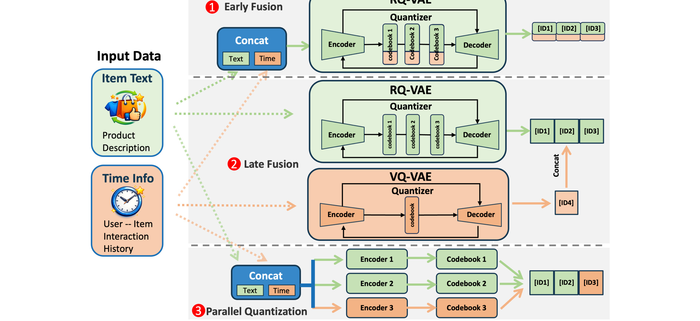
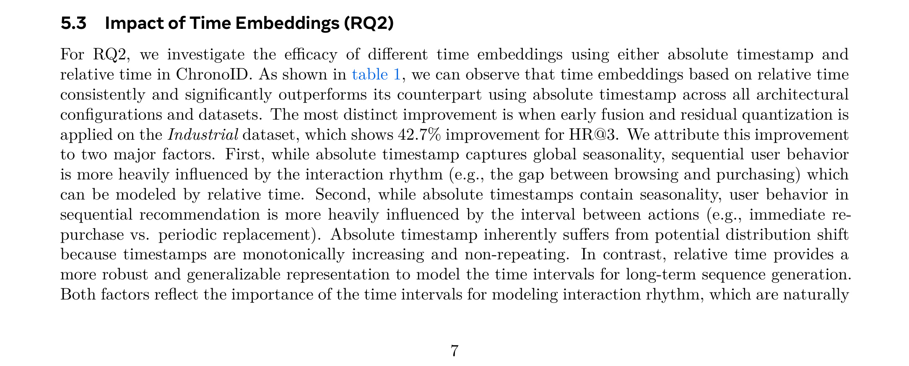
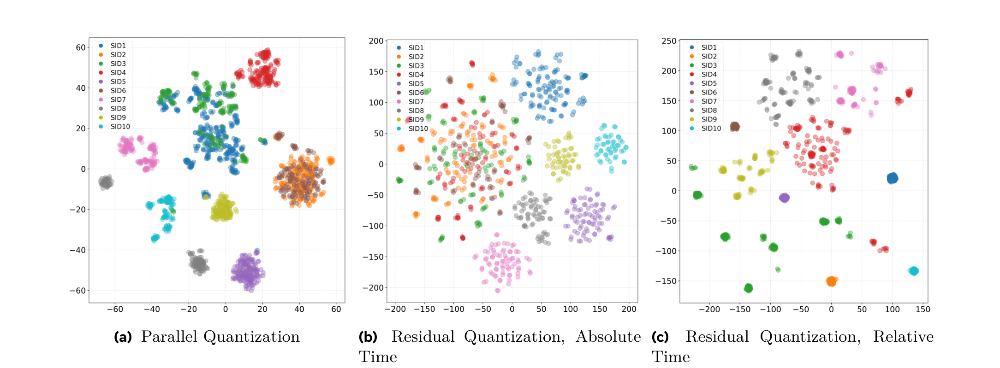
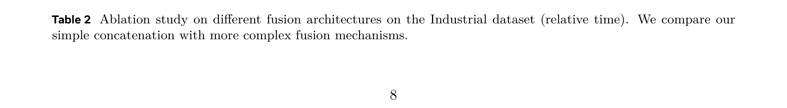

ChronoID: Infusing Explicit Temporal Signals into Semantic IDs for Generative Recommendation
ChronoID: Infusing Explicit Temporal Signals into Semantic IDs for Generative Recommendation 这篇论文的中文读法是“ChronoID：把显式时间信号注入生成式推荐 Semantic ID”。论文入口是 2606.14260，公开日期按 arXiv 记录为 2026-06-12。作者为 Dongdong Nian, Dongqi Fu, Chenliang Xu, Yinglong Xia, Hong Li, Hong Yan, Jian Kang，机构口径为 多校作者。代码/项目页状态：本轮未核验到独立公开代码仓库。。这篇论文在本轮日报中归入“推荐算法”，因为它主要解决的问题是 系统比较绝对/相对时间、早/晚融合、残差/平行量化，让同一 item 的离散标识携带交互节奏信息。
1. 背景和问题
ChronoID: Infusing Explicit Temporal Signals into Semantic IDs for Generative Recommendation 的背景可以先放在 2026 年推荐系统和大模型系统的共同变化里理解：模型能力越来越强，但线上链路需要的不是一个孤立模型，而是可以被检索、更新、校验、诊断和成本约束的结构。论文真正关心的是 系统比较绝对/相对时间、早/晚融合、残差/平行量化，让同一 item 的离散标识携带交互节奏信息。 这个问题是否能被写进方法本身，而不是在结果页上用更大的模型或更多后处理掩盖。作者选择这个切入点，是因为旧方法通常把关键约束放在隐含位置：时间只作为序列顺序存在，记忆只被当成可检索文本，Agent 脚手架只以整体 pipeline 形式比较，或者推荐去噪只假设 loss 大就更像噪声。这些隐含假设在离线实验里可能还能工作，但一旦遇到动态输入、长尾用户、流式观察、候选集变化或真实服务预算，就会暴露出不可解释的断点。
背景问题：ChronoID：把显式时间信号注入生成式推荐 Semantic ID 的第 1 个分析层面可以从系统接口、训练信号、离线评估和线上约束同时看。这里不是把摘要换成中文，而是把论文里的具体机制拆开：输入侧接收什么信号，模型中间态如何保留这些信号，输出侧怎样被指标或奖励约束，失败时又会在什么边界暴露。对工程实现而言，这个层面最重要的不是单点指标，而是它是否给调试者留下可观察的中间量。若这些中间量只能在离线表格里看到，迁移到真实推荐或 Agent 服务时仍然需要额外日志、分桶指标和回滚策略。
背景问题：ChronoID：把显式时间信号注入生成式推荐 Semantic ID 的第 2 个分析层面可以从系统接口、训练信号、离线评估和线上约束同时看。这里不是把摘要换成中文，而是把论文里的具体机制拆开：输入侧接收什么信号，模型中间态如何保留这些信号，输出侧怎样被指标或奖励约束，失败时又会在什么边界暴露。对工程实现而言，这个层面最重要的不是单点指标，而是它是否给调试者留下可观察的中间量。若这些中间量只能在离线表格里看到，迁移到真实推荐或 Agent 服务时仍然需要额外日志、分桶指标和回滚策略。
背景问题：ChronoID：把显式时间信号注入生成式推荐 Semantic ID 的第 3 个分析层面可以从系统接口、训练信号、离线评估和线上约束同时看。这里不是把摘要换成中文，而是把论文里的具体机制拆开：输入侧接收什么信号，模型中间态如何保留这些信号，输出侧怎样被指标或奖励约束，失败时又会在什么边界暴露。对工程实现而言，这个层面最重要的不是单点指标，而是它是否给调试者留下可观察的中间量。若这些中间量只能在离线表格里看到，迁移到真实推荐或 Agent 服务时仍然需要额外日志、分桶指标和回滚策略。
背景问题：ChronoID：把显式时间信号注入生成式推荐 Semantic ID 的第 4 个分析层面可以从系统接口、训练信号、离线评估和线上约束同时看。这里不是把摘要换成中文，而是把论文里的具体机制拆开：输入侧接收什么信号，模型中间态如何保留这些信号，输出侧怎样被指标或奖励约束，失败时又会在什么边界暴露。对工程实现而言，这个层面最重要的不是单点指标，而是它是否给调试者留下可观察的中间量。若这些中间量只能在离线表格里看到，迁移到真实推荐或 Agent 服务时仍然需要额外日志、分桶指标和回滚策略。
论文摘要给出的关键信息是：ChronoID studies where and how explicit time should enter Semantic IDs for generative recommendation. It compares absolute and relative time, early and late fusion, residual and parallel quantization, and contributes a time-explicit benchmark. 这段摘要说明作者并不满足于普通 benchmark 或单表提升，而是在重新定义一个中间接口。对推荐论文来说，这个接口通常是 item 表示、SID、样本权重或用户模拟；对 LLM 论文来说，这个接口可能是推理阶段、Agent 组件、记忆生命周期或验证分数。它们的共同点是让系统从“最终回答/最终排序”前移到“中间结构是否合理”。

这张图表在背景章承担的是问题定义锚点。它不是简单装饰，而是把论文里最早出现的任务结构或动机案例显式化：读者可以看到作者认为哪些对象需要被建模，哪些连接过去被旧方法忽略，哪些变量在新方法里被提前暴露。对于 ChronoID：把显式时间信号注入生成式推荐 Semantic ID 来说，图表的价值在于把“为什么旧做法不够”从抽象判断变成可定位结构。工程迁移时也应沿着图中的对象检查自己的系统：是否有对应日志，是否能按同样边界切分模块，是否能在失败时知道是哪一步的输入或状态出了问题。若只把论文结论搬到线上，而没有把图中的中间变量纳入观测，效果波动时仍然很难归因。
2. 方法
2.1 时间信号设计空间
时间信号设计空间 是论文方法的入口。作者先把原本混在整体 pipeline 里的对象拆开，明确哪些信号在输入阶段出现，哪些信号经过编码或策略模块进入中间状态，哪些信号只在最终评价阶段发挥作用。这个拆解的意义是让后续优化有了信用分配边界：如果系统最终失败，不能只说模型能力不足，而要判断是输入表达错误、状态压缩错误、检索或量化错误，还是训练目标把不同阶段的贡献混在一起。
方法模块一：时间信号设计空间 的第 1 个分析层面可以从系统接口、训练信号、离线评估和线上约束同时看。这里不是把摘要换成中文，而是把论文里的具体机制拆开：输入侧接收什么信号，模型中间态如何保留这些信号，输出侧怎样被指标或奖励约束，失败时又会在什么边界暴露。对工程实现而言，这个层面最重要的不是单点指标，而是它是否给调试者留下可观察的中间量。若这些中间量只能在离线表格里看到，迁移到真实推荐或 Agent 服务时仍然需要额外日志、分桶指标和回滚策略。
方法模块一：时间信号设计空间 的第 2 个分析层面可以从系统接口、训练信号、离线评估和线上约束同时看。这里不是把摘要换成中文，而是把论文里的具体机制拆开：输入侧接收什么信号，模型中间态如何保留这些信号，输出侧怎样被指标或奖励约束，失败时又会在什么边界暴露。对工程实现而言，这个层面最重要的不是单点指标，而是它是否给调试者留下可观察的中间量。若这些中间量只能在离线表格里看到，迁移到真实推荐或 Agent 服务时仍然需要额外日志、分桶指标和回滚策略。
方法模块一：时间信号设计空间 的第 3 个分析层面可以从系统接口、训练信号、离线评估和线上约束同时看。这里不是把摘要换成中文，而是把论文里的具体机制拆开：输入侧接收什么信号，模型中间态如何保留这些信号，输出侧怎样被指标或奖励约束，失败时又会在什么边界暴露。对工程实现而言，这个层面最重要的不是单点指标，而是它是否给调试者留下可观察的中间量。若这些中间量只能在离线表格里看到，迁移到真实推荐或 Agent 服务时仍然需要额外日志、分桶指标和回滚策略。
方法模块一：时间信号设计空间 的第 4 个分析层面可以从系统接口、训练信号、离线评估和线上约束同时看。这里不是把摘要换成中文，而是把论文里的具体机制拆开：输入侧接收什么信号，模型中间态如何保留这些信号，输出侧怎样被指标或奖励约束，失败时又会在什么边界暴露。对工程实现而言，这个层面最重要的不是单点指标，而是它是否给调试者留下可观察的中间量。若这些中间量只能在离线表格里看到，迁移到真实推荐或 Agent 服务时仍然需要额外日志、分桶指标和回滚策略。
方法模块一：时间信号设计空间 的第 5 个分析层面可以从系统接口、训练信号、离线评估和线上约束同时看。这里不是把摘要换成中文，而是把论文里的具体机制拆开：输入侧接收什么信号，模型中间态如何保留这些信号，输出侧怎样被指标或奖励约束，失败时又会在什么边界暴露。对工程实现而言，这个层面最重要的不是单点指标，而是它是否给调试者留下可观察的中间量。若这些中间量只能在离线表格里看到，迁移到真实推荐或 Agent 服务时仍然需要额外日志、分桶指标和回滚策略。

这张图表应紧跟方法入口出现，因为它展示的是论文核心结构，而不是实验结果。图中每个模块都对应一类工程责任：输入编码负责把原始行为、查询、观察或样本信号转换成可计算对象；中间策略或表示模块负责保留对最终任务有用的信息；输出或评价模块负责把中间状态映射到推荐、推理或评测结果。理解这张图时要重点看箭头，而不是只记住模块名称。箭头代表训练时梯度、推理时信息流和线上部署时的接口边界。若复现时某个箭头被简化，例如把时间信号只拼到输入、不进入 SID 学习，或者把反馈只用于当前回答、不写回记忆系统，那么论文主张的机制就会被削弱。
2.2 Early/Late/Parallel 三种融合量化架构
Early/Late/Parallel 三种融合量化架构 负责把第一步拆出的对象变成可学习或可评估的中间量。这里的关键不是“多加一个模块”，而是模块如何与原始任务目标对齐。很多推荐和大模型论文失败在这里：中间模块看起来合理，但训练目标只关心最终命中，导致中间状态学到的只是数据集捷径；或者中间模块可解释，但推理时成本太高，线上不得不绕开它。本文的设计试图让中间量既参与训练，又能在实验中被单独消融。
符号解释：u 是用户，i 是该用户序列中的当前位置，t_{u,i} 是当前交互时间，Delta t 表示相邻交互间隔。论文用它代表行为节奏，区别于只描述全局日历位置的绝对时间。 这个公式或结构化表达在笔记里保留，是因为它代表论文真正可复用的抽象：不是某个特定表格数值，而是“应该把什么对象放进同一优化或同一接口”。复现时需要检查符号背后的数据来源，尤其是哪些量可在线获得，哪些量只在离线构造时可用。如果某个变量依赖未来信息、全量语料或人工标注，线上系统就需要替代估计或延迟更新策略。
方法模块二：Early/Late/Parallel 三种融合量化架构 的第 1 个分析层面可以从系统接口、训练信号、离线评估和线上约束同时看。这里不是把摘要换成中文，而是把论文里的具体机制拆开：输入侧接收什么信号，模型中间态如何保留这些信号，输出侧怎样被指标或奖励约束，失败时又会在什么边界暴露。对工程实现而言，这个层面最重要的不是单点指标，而是它是否给调试者留下可观察的中间量。若这些中间量只能在离线表格里看到，迁移到真实推荐或 Agent 服务时仍然需要额外日志、分桶指标和回滚策略。
方法模块二：Early/Late/Parallel 三种融合量化架构 的第 2 个分析层面可以从系统接口、训练信号、离线评估和线上约束同时看。这里不是把摘要换成中文，而是把论文里的具体机制拆开：输入侧接收什么信号，模型中间态如何保留这些信号，输出侧怎样被指标或奖励约束，失败时又会在什么边界暴露。对工程实现而言，这个层面最重要的不是单点指标，而是它是否给调试者留下可观察的中间量。若这些中间量只能在离线表格里看到，迁移到真实推荐或 Agent 服务时仍然需要额外日志、分桶指标和回滚策略。
方法模块二：Early/Late/Parallel 三种融合量化架构 的第 3 个分析层面可以从系统接口、训练信号、离线评估和线上约束同时看。这里不是把摘要换成中文，而是把论文里的具体机制拆开：输入侧接收什么信号，模型中间态如何保留这些信号，输出侧怎样被指标或奖励约束，失败时又会在什么边界暴露。对工程实现而言，这个层面最重要的不是单点指标，而是它是否给调试者留下可观察的中间量。若这些中间量只能在离线表格里看到，迁移到真实推荐或 Agent 服务时仍然需要额外日志、分桶指标和回滚策略。
方法模块二：Early/Late/Parallel 三种融合量化架构 的第 4 个分析层面可以从系统接口、训练信号、离线评估和线上约束同时看。这里不是把摘要换成中文，而是把论文里的具体机制拆开：输入侧接收什么信号，模型中间态如何保留这些信号，输出侧怎样被指标或奖励约束，失败时又会在什么边界暴露。对工程实现而言，这个层面最重要的不是单点指标，而是它是否给调试者留下可观察的中间量。若这些中间量只能在离线表格里看到，迁移到真实推荐或 Agent 服务时仍然需要额外日志、分桶指标和回滚策略。
方法模块二：Early/Late/Parallel 三种融合量化架构 的第 5 个分析层面可以从系统接口、训练信号、离线评估和线上约束同时看。这里不是把摘要换成中文，而是把论文里的具体机制拆开：输入侧接收什么信号，模型中间态如何保留这些信号，输出侧怎样被指标或奖励约束，失败时又会在什么边界暴露。对工程实现而言，这个层面最重要的不是单点指标，而是它是否给调试者留下可观察的中间量。若这些中间量只能在离线表格里看到，迁移到真实推荐或 Agent 服务时仍然需要额外日志、分桶指标和回滚策略。
2.3 相对时间与平行 codebook
相对时间与平行 codebook 是方法里最容易被误解的部分。表面上它可能只是一个奖励项、一个 gate、一个 benchmark 指标或一个量化结构，但它实际控制的是“系统如何在冲突目标之间取舍”。例如准确率和延迟、去噪强度和长尾覆盖、语义表示和时间节奏、记忆写入和未来复用、Agent 模块能力和模块兼容性，都不是单目标可以解决的问题。作者通过这个模块把冲突显式化，让实验可以问：收益来自新增容量，还是来自更合理的结构约束。
方法模块三：相对时间与平行 codebook 的第 1 个分析层面可以从系统接口、训练信号、离线评估和线上约束同时看。这里不是把摘要换成中文，而是把论文里的具体机制拆开：输入侧接收什么信号，模型中间态如何保留这些信号，输出侧怎样被指标或奖励约束，失败时又会在什么边界暴露。对工程实现而言，这个层面最重要的不是单点指标，而是它是否给调试者留下可观察的中间量。若这些中间量只能在离线表格里看到，迁移到真实推荐或 Agent 服务时仍然需要额外日志、分桶指标和回滚策略。
方法模块三：相对时间与平行 codebook 的第 2 个分析层面可以从系统接口、训练信号、离线评估和线上约束同时看。这里不是把摘要换成中文，而是把论文里的具体机制拆开：输入侧接收什么信号，模型中间态如何保留这些信号，输出侧怎样被指标或奖励约束，失败时又会在什么边界暴露。对工程实现而言，这个层面最重要的不是单点指标，而是它是否给调试者留下可观察的中间量。若这些中间量只能在离线表格里看到，迁移到真实推荐或 Agent 服务时仍然需要额外日志、分桶指标和回滚策略。
方法模块三：相对时间与平行 codebook 的第 3 个分析层面可以从系统接口、训练信号、离线评估和线上约束同时看。这里不是把摘要换成中文，而是把论文里的具体机制拆开：输入侧接收什么信号，模型中间态如何保留这些信号，输出侧怎样被指标或奖励约束，失败时又会在什么边界暴露。对工程实现而言，这个层面最重要的不是单点指标，而是它是否给调试者留下可观察的中间量。若这些中间量只能在离线表格里看到，迁移到真实推荐或 Agent 服务时仍然需要额外日志、分桶指标和回滚策略。
方法模块三：相对时间与平行 codebook 的第 4 个分析层面可以从系统接口、训练信号、离线评估和线上约束同时看。这里不是把摘要换成中文，而是把论文里的具体机制拆开：输入侧接收什么信号，模型中间态如何保留这些信号，输出侧怎样被指标或奖励约束，失败时又会在什么边界暴露。对工程实现而言，这个层面最重要的不是单点指标，而是它是否给调试者留下可观察的中间量。若这些中间量只能在离线表格里看到，迁移到真实推荐或 Agent 服务时仍然需要额外日志、分桶指标和回滚策略。
方法模块三：相对时间与平行 codebook 的第 5 个分析层面可以从系统接口、训练信号、离线评估和线上约束同时看。这里不是把摘要换成中文，而是把论文里的具体机制拆开：输入侧接收什么信号，模型中间态如何保留这些信号，输出侧怎样被指标或奖励约束，失败时又会在什么边界暴露。对工程实现而言，这个层面最重要的不是单点指标，而是它是否给调试者留下可观察的中间量。若这些中间量只能在离线表格里看到，迁移到真实推荐或 Agent 服务时仍然需要额外日志、分桶指标和回滚策略。
2.4 时间显式 benchmark 与泄漏控制
时间显式 benchmark 与泄漏控制 连接训练和推理。很多论文在训练阶段看起来充分，但推理阶段会发生接口漂移：训练时有完整上下文，推理时是流式输入；训练时有人工构造 rationale，推理时生成 rationale 太慢；训练时有所有用户历史，推理时检索只能取一小段；训练时可以重新量化，线上索引需要稳定。本文把这个连接作为方法的一部分，说明作者意识到离线训练目标必须服务部署约束。
方法模块四：时间显式 benchmark 与泄漏控制 的第 1 个分析层面可以从系统接口、训练信号、离线评估和线上约束同时看。这里不是把摘要换成中文，而是把论文里的具体机制拆开：输入侧接收什么信号，模型中间态如何保留这些信号，输出侧怎样被指标或奖励约束，失败时又会在什么边界暴露。对工程实现而言，这个层面最重要的不是单点指标，而是它是否给调试者留下可观察的中间量。若这些中间量只能在离线表格里看到，迁移到真实推荐或 Agent 服务时仍然需要额外日志、分桶指标和回滚策略。
方法模块四：时间显式 benchmark 与泄漏控制 的第 2 个分析层面可以从系统接口、训练信号、离线评估和线上约束同时看。这里不是把摘要换成中文，而是把论文里的具体机制拆开：输入侧接收什么信号，模型中间态如何保留这些信号，输出侧怎样被指标或奖励约束，失败时又会在什么边界暴露。对工程实现而言，这个层面最重要的不是单点指标，而是它是否给调试者留下可观察的中间量。若这些中间量只能在离线表格里看到，迁移到真实推荐或 Agent 服务时仍然需要额外日志、分桶指标和回滚策略。
方法模块四：时间显式 benchmark 与泄漏控制 的第 3 个分析层面可以从系统接口、训练信号、离线评估和线上约束同时看。这里不是把摘要换成中文，而是把论文里的具体机制拆开：输入侧接收什么信号，模型中间态如何保留这些信号，输出侧怎样被指标或奖励约束，失败时又会在什么边界暴露。对工程实现而言，这个层面最重要的不是单点指标，而是它是否给调试者留下可观察的中间量。若这些中间量只能在离线表格里看到，迁移到真实推荐或 Agent 服务时仍然需要额外日志、分桶指标和回滚策略。
方法模块四：时间显式 benchmark 与泄漏控制 的第 4 个分析层面可以从系统接口、训练信号、离线评估和线上约束同时看。这里不是把摘要换成中文，而是把论文里的具体机制拆开：输入侧接收什么信号，模型中间态如何保留这些信号，输出侧怎样被指标或奖励约束，失败时又会在什么边界暴露。对工程实现而言，这个层面最重要的不是单点指标，而是它是否给调试者留下可观察的中间量。若这些中间量只能在离线表格里看到，迁移到真实推荐或 Agent 服务时仍然需要额外日志、分桶指标和回滚策略。
方法模块四：时间显式 benchmark 与泄漏控制 的第 5 个分析层面可以从系统接口、训练信号、离线评估和线上约束同时看。这里不是把摘要换成中文，而是把论文里的具体机制拆开：输入侧接收什么信号，模型中间态如何保留这些信号，输出侧怎样被指标或奖励约束，失败时又会在什么边界暴露。对工程实现而言，这个层面最重要的不是单点指标，而是它是否给调试者留下可观察的中间量。若这些中间量只能在离线表格里看到，迁移到真实推荐或 Agent 服务时仍然需要额外日志、分桶指标和回滚策略。
3. 实验结果
3.1 实验设置与主结果口径
实验部分首先要看数据和指标是否真的对应论文问题。Figure 1 是三种 ChronoID 架构；Table 1 是 Amazon Industrial、Office 和 Mercari 主结果；Figure 2 是 SID 聚类可视化；Table 2 是早融合内部结构消融。 这些图表共同说明作者不是只报告一个总体分数，而是把主结果、消融、成本和诊断拆开。对推荐论文来说，我会重点看不同数据集、不同 backbone、不同流行度桶或不同 SID 结构的结果是否一致；对 LLM/Agent 论文来说，我会重点看是否同时报告准确率、过程指标、成本和失败案例。单一平均分很容易掩盖机制是否有效。

这张实验图表是主证据之一。读它时不要只看哪一行最好，而要看比较对象是否覆盖了论文想反驳的旧路径。比如 ChronoID：把显式时间信号注入生成式推荐 Semantic ID 如果声称新增中间结构有效，就必须和没有该结构、结构被替换、结构位置变化或强 baseline 做对照。表格中的指标也要分开理解：命中率或准确率说明最终任务，覆盖率/多样性/延迟/成本说明系统代价，消融说明收益来源。若某个方法只在一个指标上变好，同时牺牲另一类关键约束，就不能简单写成全面优于旧方法。
3.2 消融、成本与失败模式
消融实验的价值在于确定论文贡献是否来自作者声称的机制。若去掉关键模块后指标下降，说明该模块有必要；若替换成更简单结构仍然接近，说明方法可能有过度设计；若强 baseline 在部分数据集上更好，则需要承认论文边界。ChronoID：把显式时间信号注入生成式推荐 Semantic ID 的实验值得关注，正是因为它没有把所有现象都压成一个结论，而是留下了不同场景下的差异。

这张图表更适合放在消融与诊断段落。它帮助判断机制是否稳定，尤其是参数、阶段、组件或数据子集变化后趋势是否一致。如果图表展示的是训练动态、指标曲线或敏感性分析，那么重点应放在斜率和转折点，而不是单个最终数字；如果图表是消融表，则要看去掉哪个部件损失最大。对工程读者来说，这张图表最有用的地方在于给出调参或上线监控线索：哪些旋钮影响成本，哪些旋钮影响覆盖，哪些错误类型说明系统不是没记住，而是没检索、没复用或没正确分配权重。
3.3 结果可信度与可复现风险
本轮日报只引用已核验的 arXiv 页面、PDF 摘要、PDF 图表和 worker 只读材料。具体实验数值没有逐项重抄到日报，是为了避免在未逐表复核所有小数位时制造伪精确；本地笔记保留了主图和主表截图，读者需要数值时应以原始 PDF 为准。更重要的是实验结论的形状：论文是否在多个数据集或环境上复现，是否提供消融，是否报告成本，是否把失败模式讲清楚。
实验结果解释：ChronoID：把显式时间信号注入生成式推荐 Semantic ID 的第 1 个分析层面可以从系统接口、训练信号、离线评估和线上约束同时看。这里不是把摘要换成中文，而是把论文里的具体机制拆开：输入侧接收什么信号，模型中间态如何保留这些信号，输出侧怎样被指标或奖励约束，失败时又会在什么边界暴露。对工程实现而言，这个层面最重要的不是单点指标，而是它是否给调试者留下可观察的中间量。若这些中间量只能在离线表格里看到，迁移到真实推荐或 Agent 服务时仍然需要额外日志、分桶指标和回滚策略。
实验结果解释：ChronoID：把显式时间信号注入生成式推荐 Semantic ID 的第 2 个分析层面可以从系统接口、训练信号、离线评估和线上约束同时看。这里不是把摘要换成中文，而是把论文里的具体机制拆开：输入侧接收什么信号，模型中间态如何保留这些信号，输出侧怎样被指标或奖励约束，失败时又会在什么边界暴露。对工程实现而言，这个层面最重要的不是单点指标，而是它是否给调试者留下可观察的中间量。若这些中间量只能在离线表格里看到，迁移到真实推荐或 Agent 服务时仍然需要额外日志、分桶指标和回滚策略。
实验结果解释：ChronoID：把显式时间信号注入生成式推荐 Semantic ID 的第 3 个分析层面可以从系统接口、训练信号、离线评估和线上约束同时看。这里不是把摘要换成中文，而是把论文里的具体机制拆开：输入侧接收什么信号，模型中间态如何保留这些信号，输出侧怎样被指标或奖励约束，失败时又会在什么边界暴露。对工程实现而言，这个层面最重要的不是单点指标，而是它是否给调试者留下可观察的中间量。若这些中间量只能在离线表格里看到，迁移到真实推荐或 Agent 服务时仍然需要额外日志、分桶指标和回滚策略。
实验结果解释：ChronoID：把显式时间信号注入生成式推荐 Semantic ID 的第 4 个分析层面可以从系统接口、训练信号、离线评估和线上约束同时看。这里不是把摘要换成中文，而是把论文里的具体机制拆开：输入侧接收什么信号，模型中间态如何保留这些信号，输出侧怎样被指标或奖励约束，失败时又会在什么边界暴露。对工程实现而言，这个层面最重要的不是单点指标，而是它是否给调试者留下可观察的中间量。若这些中间量只能在离线表格里看到，迁移到真实推荐或 Agent 服务时仍然需要额外日志、分桶指标和回滚策略。
4. 总结
4.1 我的判断
我认为 ChronoID：把显式时间信号注入生成式推荐 Semantic ID 的主要价值在于把一个原本容易被当成工程细节的问题提升成研究对象。它没有简单宣称更大模型、更长上下文或更复杂训练一定更好，而是问：系统中哪个中间接口承载了真正的任务约束？这个问题对推荐系统和大模型都重要，因为真实业务里的失败通常不是模型完全不会，而是信号在某个接口被错写、错读、错权衡或错复用。本文的结构化方法给了一个可迁移的检查框架。
4.2 工程启发与复现建议
第一，复现时应从最小闭环开始：先复现论文主表里最核心的数据集和 baseline，再逐一打开关键模块。第二，必须保留与论文一致的输入边界，例如时间 cutoff、用户反馈注入位置、共享文档池、SID codebook 训练范围或 head/tail 分桶，否则收益来源会混杂。第三，离线指标要加入诊断维度：推荐任务看 head/mid/tail、coverage、diversity 和 latency；Agent/RAG 任务看证据写入、检索命中、过程成本和失败类型。第四，线上前应把论文里的中间变量接入日志，否则一旦指标波动，团队只能猜测原因。
4.3 局限与后续跟进
局限至少有四点。第一，公开数据集或 benchmark 与工业系统仍有分布差异，尤其是实时更新、曝光策略、隐私约束和多目标排序。第二，论文中的最佳结构未必在更大模型、更长序列或更复杂业务约束下保持优势。第三，部分代码或项目页虽然在摘要中出现，但本轮没有逐文件审计可复现性，不能把“有链接”写成“可一键复现”。第四，离线指标无法替代线上用户体验；推荐结果的解释、记忆系统的隐私、安全审核的责任边界都需要单独评估。后续我会继续跟进作者仓库、后续版本和同方向论文，优先关注是否有更细分的失败案例、跨数据集稳定性和真实服务成本。